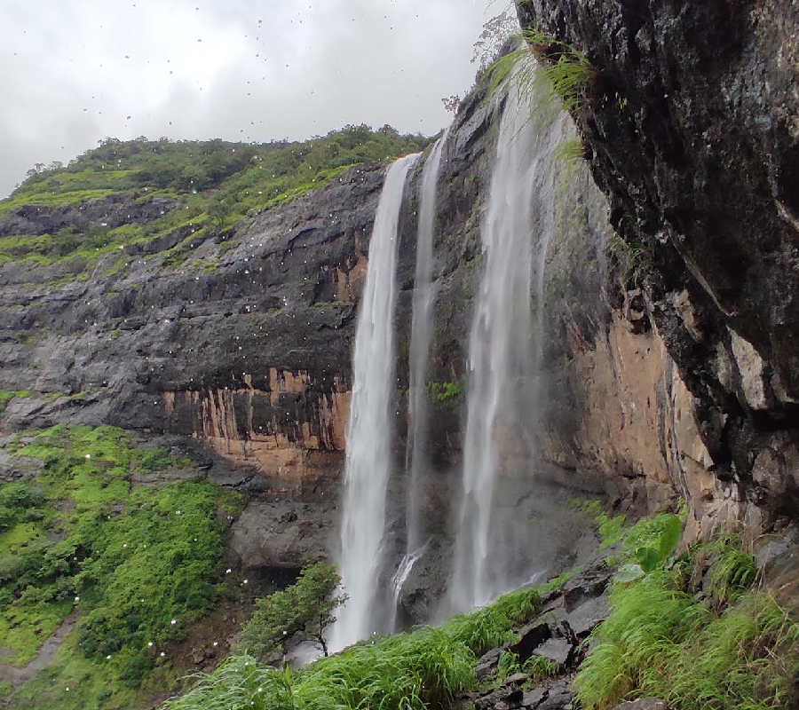

Kataldhar Waterfall Trek

A hidden gem in the Sahyadri mountains, the Kataldhar Waterfall is a stunning sight during the monsoon season. The trek is challenging but rewarding, offering breathtaking views of the waterfall cascading down the rocks.
Dukes Nose

Duke's Nose, also known as Nagphani, is a popular trekking destination in Maharashtra. The trek offers panoramic views of the Western Ghats and is famous for its unique cliff, which resembles the nose of Duke Wellington. It's a moderate trek that combines adventure and scenic beauty.
Rajmachi Fort Trek

Rajmachi Fort is a historic site located in the Sahyadri mountains, offering a picturesque trek with a blend of history and natural beauty. The trek takes you through lush green forests, and the fort itself offers stunning views of the surrounding valleys and mountains. It's a must-do trek for history buffs and nature lovers alike.